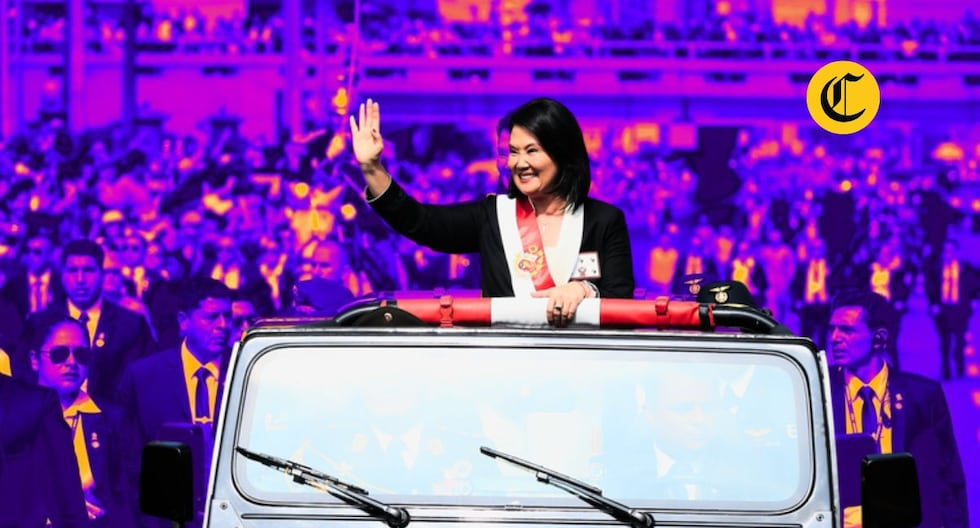
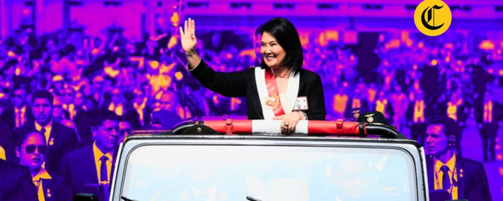

Debate para la alcaldía de Lima: así serán los cruces y orden de participación de los candidatos
El Jurado Nacional de Elecciones sorteó la distribución de los 26 partidos en dos jornadas y definió las duplas y ternas que protagonizarán los bloques de interacción, preguntas ciudadanas y mensajes finales.

El debate se realizará en el auditorio Mario Vargas Llosa de la Biblioteca Nacional del Perú, en San Borja. Foto: JNE.
El Jurado Nacional de Elecciones (JNE) definió mediante sorteo el orden de intervención de los 26 candidatos que disputarán la Municipalidad Metropolitana de Lima en las Elecciones Regionales y Municipales del próximo 4 de octubre. Los debates se llevarán a cabo el lunes 21 y martes 22 de septiembre en el auditorio Mario Vargas Llosa de la Biblioteca Nacional del Perú, en San Borja, a partir de las 8:00 p.m.
La organización electoral dividió a los partidos en dos grupos de 13 agrupaciones por jornada. Cada día se desarrollará en cuatro bloques que suman más de diez minutos de exposición por candidato, según informó Carlos Vilela, director nacional de Educación del JNE . El formato combina presentaciones individuales, cruces directos entre postulantes, preguntas formuladas por ciudadanos y un mensaje final de cierre.
Los representantes de las organizaciones políticas asistieron al sorteo realizado en la sede del JNE, ante notario público y transmitido en directo por el canal JNE Media. En el acto se establecieron no solo los días de participación, sino también las duplas y ternas específicas que se enfrentarán en cada bloque de interacción .
Primera jornada: lunes 21 de septiembre
La jornada de apertura contará con la participación de 13 agrupaciones políticas. Según el sorteo, el orden de intervención en el bloque de presentación y mensaje final será el siguiente:
Partidos y candidatos del lunes 21
- Partido Cívico Obras Ricardo Belmont Cassinelli
- Coalición Tierra Verde Yehude Simon Munaro
- Frepap Segundo Valdez Zavala
- Partido Morado Victoria Betzabé La Cruz Garcés
- Somos Perú Carlos Bruce Montes de Oca
- Juntos por el Perú Oswaldo Hernán Vargas Cuéllar
- Pueblo Consciente Luis Alberto Huette Tolentino
- Batalla Perú Samir Frank Quispe Caballero
- Alianza para el Progreso Elio Fernando Riera Garro
- Partido Patriótico del Perú Sandro Caller Gutiérrez
- Ahora Nación Susel Ana María Paredes Piqué
- Partido Demócrata Verde Flor de María Hurtado Valdez
- Podemos Perú Daniel Belizario Urresti Elera
En el bloque 2, denominado "Interacción entre candidatos", los postulantes se agruparán en cinco duplas y una terna para contrastar propuestas con preguntas y réplicas, con tres minutos de intervención por participante . Los cruces quedaron definidos de la siguiente manera:
- Partido Patriótico del Perú vs. Podemos Perú
- Alianza para el Progreso vs. Pueblo Consciente
- Tierra Verde vs. Somos Perú
- Partido Morado vs. Obras
- Frepap vs. Ahora Nación
- Juntos por el Perú vs. Partido Demócrata Verde vs. Batalla Perú

Representantes de los partidos políticos participaron del sorteo ante notario público en la sede del JNE. Foto: JNE.
El bloque 3A, destinado a la pregunta ciudadana, tendrá una composición distinta. De las 4,921 preguntas recibidas mediante la campaña "Pregúntale a tu candidat@", el JNE seleccionó dos interrogantes que serán respondidas en este segmento . Las duplas y terna para este bloque son:
- Frepap vs. Podemos Perú
- Alianza para el Progreso vs. Partido Patriótico del Perú
- Somos Perú vs. Ahora Nación
- Obras vs. Juntos por el Perú
- Pueblo Consciente vs. Tierra Verde
- Partido Demócrata Verde vs. Batalla Perú vs. Partido Morado
El bloque 3B, denominado "Sin rodeos", presenta una tercera configuración de cruces. En este espacio los candidatos confrontan posiciones de manera más directa. Los emparejamientos son los siguientes:
- Alianza para el Progreso vs. Partido Morado
- Frepap vs. Ahora Nación
- Obras vs. Somos Perú
- Partido Demócrata Verde vs. Podemos Perú
- Partido Patriótico del Perú vs. Tierra Verde
- Pueblo Consciente vs. Batalla Perú vs. Juntos por el Perú
El mensaje final del lunes 21 seguirá este orden: Partido Patriótico del Perú, Podemos Perú, Frepap, Obras, Alianza para el Progreso, Batalla Perú, Partido Morado, Partido Demócrata Verde, Juntos por el Perú, Tierra Verde, Ahora Nación, Somos Perú y Pueblo Consciente .
Segunda jornada: martes 22 de septiembre
La segunda fecha reunirá a las 13 agrupaciones restantes. El bloque de presentación y el mensaje final seguirán un orden específico establecido por sorteo. Los partidos que participarán son:
Partidos y candidatos del martes 22
- Frente de la Esperanza Representante designado
- APRA Representante designado
- Perú Libre Representante designado
- Renovación Popular Representante designado
- Venceremos Juan Carlos Alvarado Mestanza
- Fuerza Ciudadana Rubén Daniel Representante
- Progresemos Representante designado
- Partido Popular Cristiano Edgardo Renán De Pomar Vizcarra
- Avanza País Francis Allison Oyague
- Acción Popular Representante designado
- Visión Perú Representante designado
- Fuerza Popular Samuel Marcos Daza Taype
- Partido del Buen Gobierno Carlos Gallardo Neyra
En el bloque 2 de interacción, los cruces del martes 22 quedaron configurados de la siguiente forma:
- APRA vs. Avanza País
- Progresemos vs. Acción Popular
- Renovación Popular vs. Fuerza Popular
- Partido Popular Cristiano vs. Venceremos
- Partido del Buen Gobierno vs. Visión Perú
- Fuerza Ciudadana vs. Frente de la Esperanza vs. Perú Libre
Para el bloque 3A de pregunta ciudadana, las duplas y terna son:
- Frente de la Esperanza vs. Fuerza Ciudadana
- APRA vs. Progresemos
- Fuerza Popular vs. Venceremos
- Perú Libre vs. Acción Popular
- Partido Popular Cristiano vs. Renovación Popular
- Visión Perú vs. Partido del Buen Gobierno vs. Avanza País
El bloque 3B "Sin rodeos" del martes 22 presenta los siguientes enfrentamientos:
- Renovación Popular vs. Partido Popular Cristiano
- Visión Perú vs. Perú Libre
- Fuerza Ciudadana vs. Progresemos
- Acción Popular vs. APRA
- Partido del Buen Gobierno vs. Fuerza Popular
- Venceremos vs. Frente de la Esperanza vs. Avanza País
El mensaje final del martes 22 seguirá este orden: Avanza País, Venceremos, Fuerza Popular, Progresemos, Partido del Buen Gobierno, Partido Popular Cristiano, Acción Popular, Frente de la Esperanza, Perú Libre, APRA, Fuerza Ciudadana, Visión Perú y Renovación Popular .

Los 26 candidatos a la alcaldía de Lima participarán en dos jornadas de debate organizadas por el JNE. Foto: Difusión.
Los cuatro bloques del debate
El formato aprobado por el JNE establece una estructura uniforme para ambas jornadas. El bloque 1 está dedicado a la presentación de los candidatos y la exposición de su visión para Lima, con un minuto y medio por participante. El bloque 2 es el de interacción entre candidatos, donde se contrastan propuestas mediante preguntas y réplicas, con tres minutos de intervención .
El bloque 3 se subdivide en dos segmentos. El 3A corresponde a la pregunta ciudadana, alimentada por las casi 5,000 interrogantes que el JNE recogió a nivel nacional a través de su campaña de participación. El 3B, llamado "Sin rodeos", permite un intercambio más directo entre los postulantes. Finalmente, el bloque 4 otorga un minuto y medio a cada candidato para su mensaje de cierre .
Ficha técnica del debate
- Fechas Lunes 21 y martes 22 de septiembre
- Hora 8:00 p.m.
- Lugar Auditorio Mario Vargas Llosa, Biblioteca Nacional del Perú, San Borja
- Moderadores Alicia Retto y Omar Mariluz Laguna
- Transmisión Televisión abierta, streaming por Voto Informado y redes del JNE
- Participantes 26 candidatos divididos en dos grupos de 13
Las organizaciones políticas también acordaron que los moderadores de ambas jornadas sean los periodistas Alicia Retto y Omar Mariluz Laguna, según lo consignado en el acta del sorteo . La transmisión será en vivo por televisión abierta en cada región, así como por streaming mediante la plataforma Voto Informado y las redes sociales del JNE .
Un debate con contexto plebiscitario
El analista político Juan de la Puente advirtió que esta elección municipal trasciende la simple elección de un gestor local. "Es más bien una especie de plebiscito de aprobación o rechazo hacia un modelo de gestión de la ciudad, un modelo ideológico, conservador y, además, sui géneris, en el sentido de que prescinde de las formas, hiperpersonalista, centrado en la figura y en los caprichos personales del alcalde de Lima", señaló en entrevista con La República .
De la Puente sostiene que Lima concentra un tercio del electorado nacional, lo que convierte la contienda municipal en un termómetro político de alcance nacional. La pregunta central, según su análisis, es si el modelo de gestión personalista y conservador debe continuar o no . En ese sentido, el debate del 21 y 22 de septiembre se convierte en la principal vitrina para que los 26 candidatos confronten sus propuestas ante un electorado que, según las proyecciones, aún no define su voto.
El proceso electoral culminará el 4 de octubre, cuando los peruanos acudan a las urnas para elegir a sus autoridades regionales y municipales. El debate de Lima Metropolitana será el cierre del ciclo de debates electorales que el JNE inició el 8 de septiembre en Junín y que recorrió las distintas regiones del país .